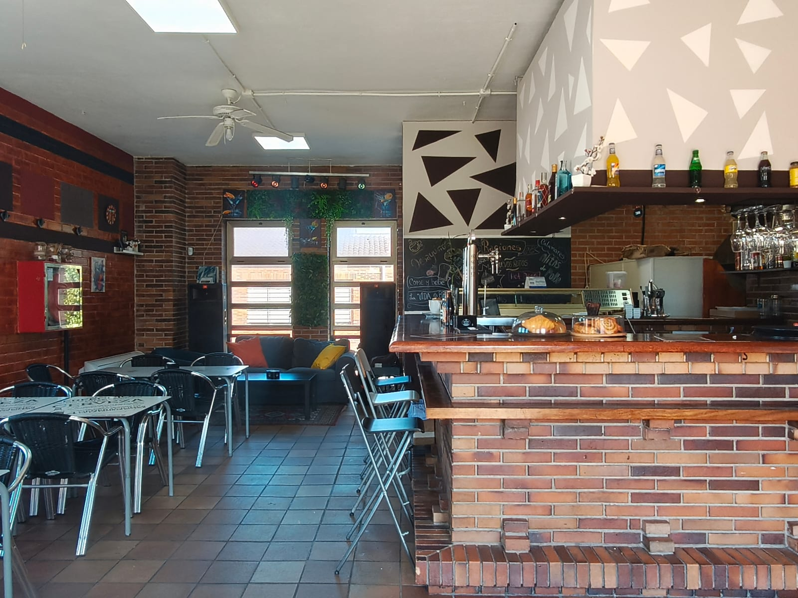
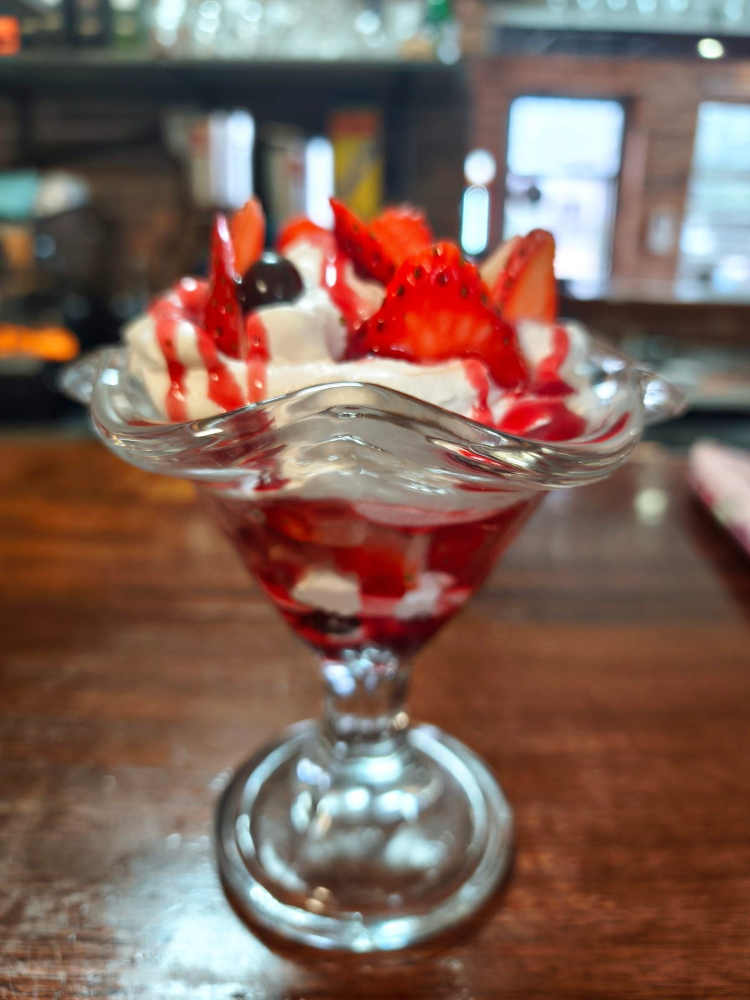
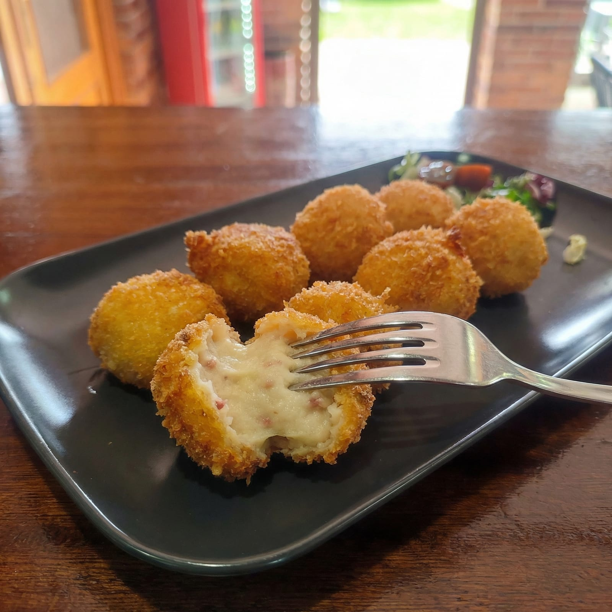
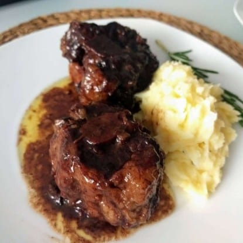
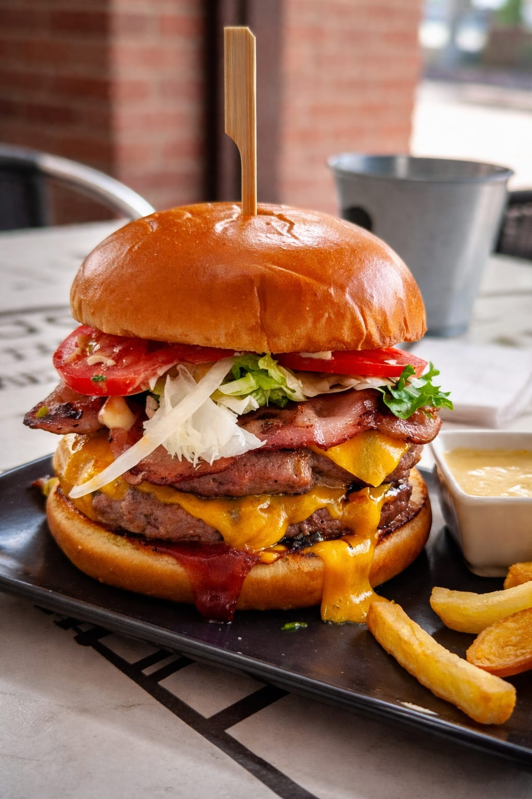
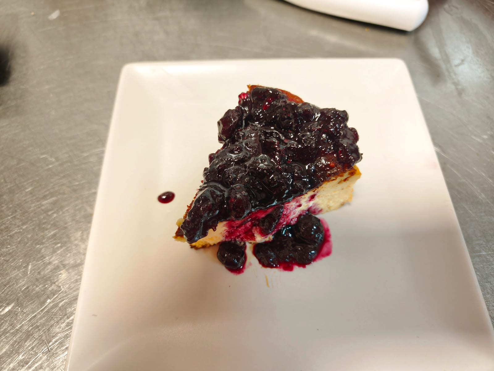
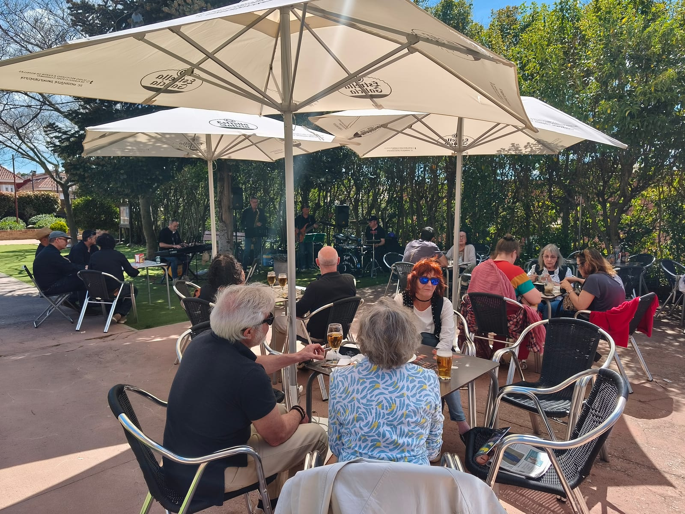

Raciones caseras para compartir, cócteles artesanales y el vermut de los domingos con directo. En el corazón del pueblo, donde te conocemos por tu nombre.

Si buscas un bar en Valdemorillo para tapear, tomar un vermut o quedar con los tuyos, somos un punto de encuentro en el corazón del pueblo. Estamos en la Casa de la Cultura y abrimos desde 2018 con una idea sencilla: raciones caseras, buen ambiente y un trato cercano. Aquí no vienes solo a consumir; vienes a pasar un buen rato.
…y te conocemos por tu nombre

¡bienvenido!




Nuestra terraza con vistas a la sierra es una de las más especiales del municipio. Los sábados y los domingos de vermut hay música en vivo: un plan perfecto para grupos, parejas y familias que buscan algo más que una simple consumición.
Reservar mesa para el findeDesde 2018 siendo punto de reunión en Valdemorillo, con una valoración de 4,8 en Google que refleja el trato personalizado que nos define. Terraza con vistas, música en directo, cócteles artesanales y raciones caseras.
Sí. Contamos con una terraza exterior con vistas a la sierra, una de las más especiales del pueblo. En fines de semana las plazas son limitadas, por lo que conviene reservar.
Sí, ofrecemos música en directo los sábados y los domingos de vermut. Es uno de nuestros planes más populares.
Raciones caseras y tapas madrileñas con toques creativos, pensadas para compartir, además de cócteles artesanales y una bodega seleccionada.
Puedes reservar mesa fácilmente por WhatsApp al 639 98 47 27. Te recomendamos hacerlo con antelación si vienes en grupo o en fin de semana, ya que la terraza tiene plazas limitadas.
Nos encuentras en la Casa de la Cultura de Valdemorillo. Las plazas en terraza son limitadas: si vienes en grupo o en fin de semana, reserva con antelación.